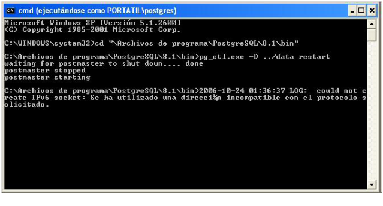
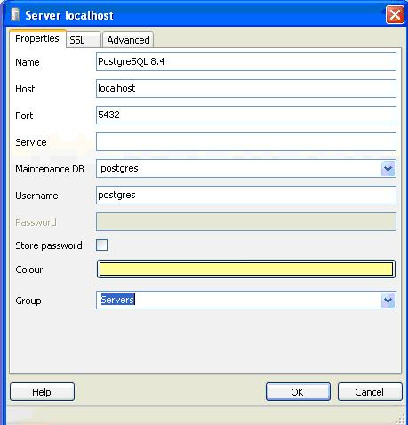
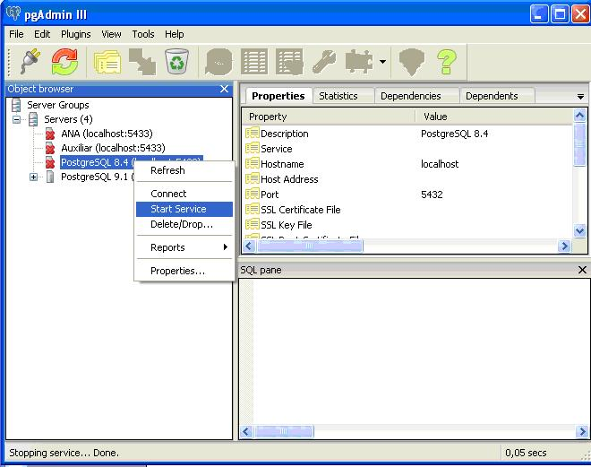

2. Arranque y parada del sistema
2 - Arranque y parada del sistema
Haremos la parada y arranque del sistema en modo línea desde una consola, y también lo intentaremos desde PgAdmin.
- En Windows:
Automático.
Por haber pedido en la instalación como un servicio, manualmente podemos elegir la opción siempre que tengamos una versión anterior a la 8.4
Inicio->TodoslosProgramas->PostgreSQL8.3->StartService.
Para pararlo
Inicio->TodoslosProgramas->PostgreSQL8.3->StopService.
Utilizando pg_ctl.exe.
Es el programa equivalente al script de Linux. Se encuentra con los ficheros ejecutables
(C:\ArchivosdePrograma\PostgreSQL\9.2\bin).
Da problemas en las opciones de arranque si se ejecuta como administrador del sistema,por tanto lo deberíamos hacer desde una consola como el usuario de S.O. posgres(miráis la nota previa al inicio del tema por ver como abrir una consola de posgres en Windows).
Tendremos las mismas opciones que hemos visto en el caso de Linux.
En la siguiente imagen tenemos la orden que hace posible el rearranque por medio de pg_ctl.exe, donde la Base de Datos está en C:\ArchivosdePrograma\PostgreSQL\9.2\data (observa que se trata de una consola ejecutada como posgres):

Ejecutando directamente el programa postgres.exe situado en el mismo lugar. Tendremos las opciones :
postgresql-8.3 opción
donde la opción puede ser:
start arranca el servidor
stop lo para
restart rearranca (lo para, y lo vuelve a poner en marcha)
reload vuelve a leer los ficheros de configuración (sin rearrancar)
status ver el estado en que se encuentra actualmente (en marcha, parado, ...), y otros informaciones de interés
Con PgAdmin
Si tenemos bien configurada la conexión al servidor como posgres podremos parar y poner en marcha el servidor. Para eso debemos tener donde dice Servicio (Service) bien el servicio de Windows (como en la figura) o bien la ruta de pg_ctl con los parámetros necesarios para poder arrancar

Esta entrada era la única que había por defecto, y es para el usuario posgres. Si es así podremos parar o poner en marcha, bien en el menú de herramientas, bien en el menú emergente sobre el servidor

Nota
Es muy posible que si hemos ido jugando con pg_ctl.exe o postgres.exe para reiniciar el servidor PostgreSQL, que en el pgAdmin no se pueda iniciar o parar el servidor. De hecho solo nos propondrá Iniciar el servicio, cuando a lo mejor lo tenemos ya en marcha.
Seguramente todo volverá a funcionar correctamente la siguiente vez que arranquemos Windows.
En Linux,aunque parezca mentira,es más complicado parar y poner en marcha desde pgAdmin. Como mínimo desde la versión que se está documentando en estos apuntes, que para el pgAdmin instalado por paquetes en Ubuntu es la 1.4.3.Tal y como dice la documentación deberemos colocar en el servicio la orden que pondría en marcha o pararía el servidor utilizando pg_ctl, que sería esta:
sudo-uposgres/usr/lib/postgresql/9.2/bin/pg_ctl-D
/var/lib/postgresql/9.2/main-o'-c
config_file=/etc/postgresql/9.2/main/postgresql.conf'
Pero además se debería ejecutar el pgAdmin como root, ya que si no, no tendría efecto el sudo.
Por tanto, como veis, un poco "rollo"...